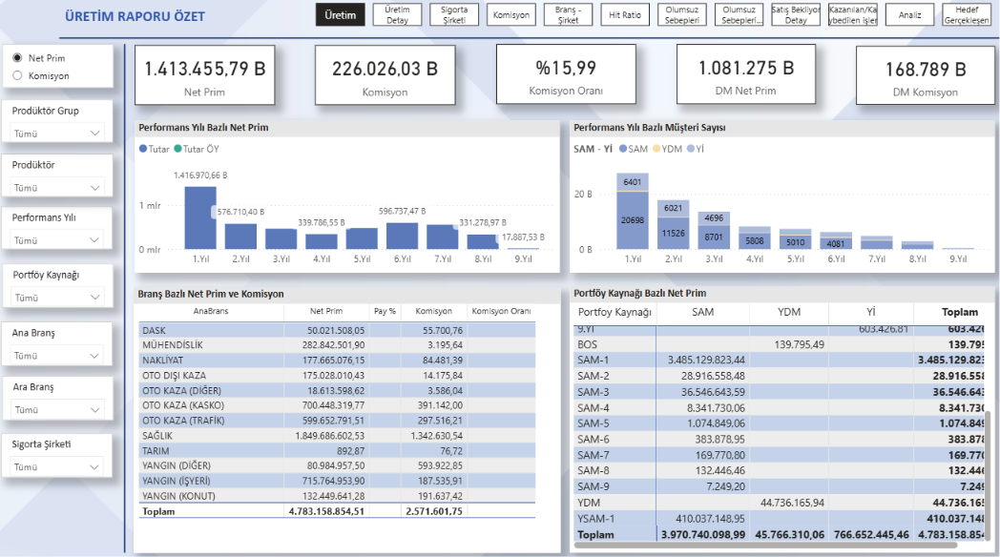
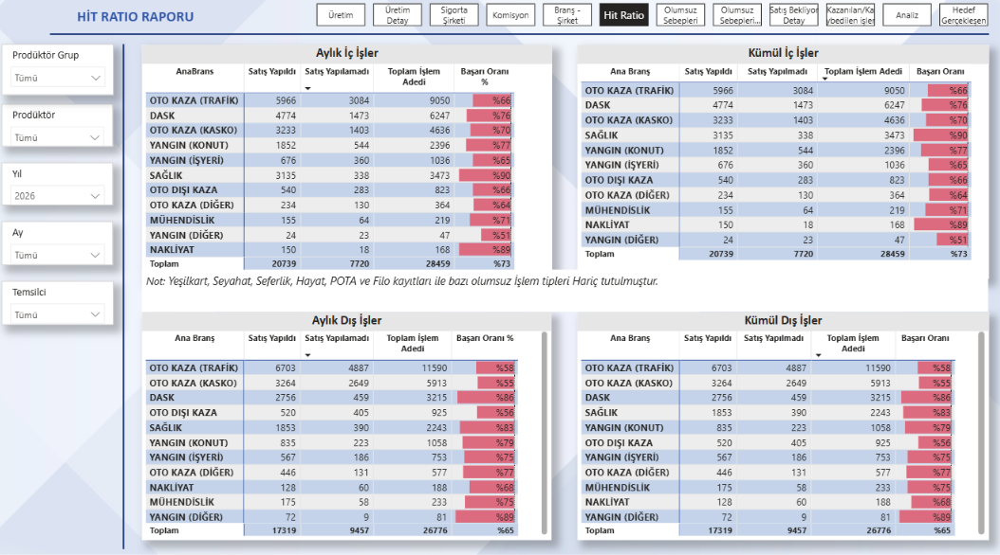
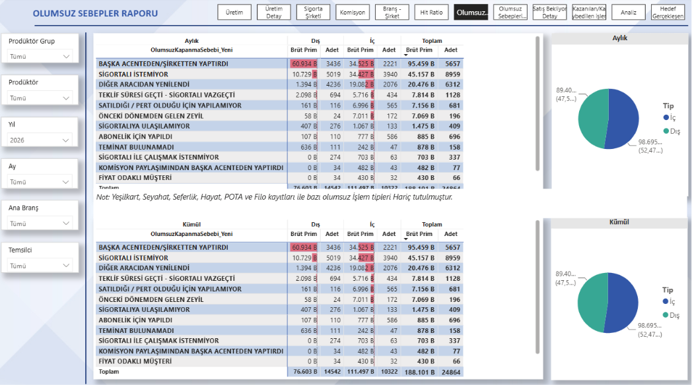
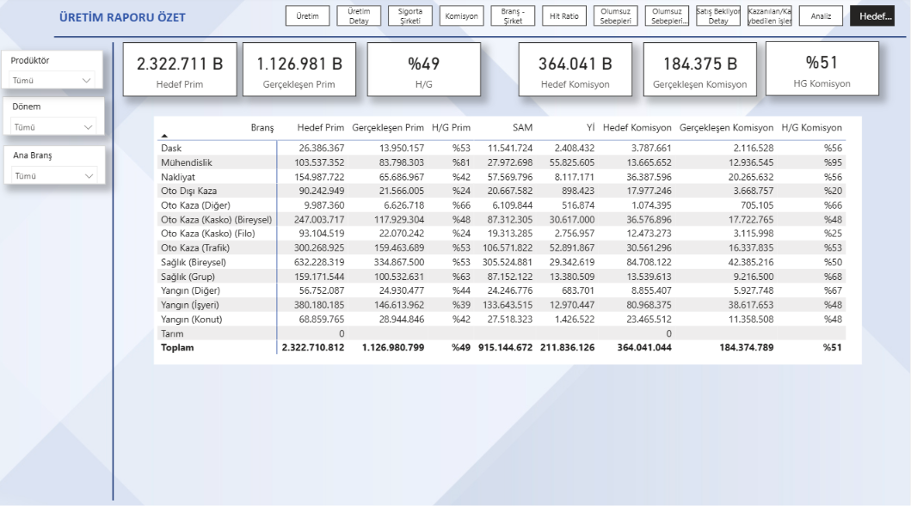

Fragmented performance views
Production, commissions, portfolio development, sales outcomes and target performance needed to be viewed through a consistent reporting structure.
POWER BI · BUSINESS INTELLIGENCE · MANAGEMENT REPORTING
A multi-page Power BI solution built to bring production, commission, portfolio, sales conversion, loss analysis, pending business and target-versus-actual performance into a single management reporting environment.
Management reporting required several operational and financial perspectives to be analyzed together rather than through isolated reports.
Production, commissions, portfolio development, sales outcomes and target performance needed to be viewed through a consistent reporting structure.
High-level KPIs alone were not sufficient. Users needed the ability to move from executive summaries into branches, producers, insurance companies, customers and individual transaction-level detail.
I developed a structured Power BI reporting environment that connects management-level KPIs with detailed operational analysis.
The project combines financial understanding, data modeling and business intelligence development rather than focusing only on dashboard visualization.
Four representative report views are shown below to demonstrate the breadth of the solution without publishing every report page. Click any image to view it at full resolution.

Executive-level production and portfolio view combining net premium, commissions, commission rate, performance-year analysis, branch performance and portfolio-source breakdowns.
Gain: A manager can quickly see how production and commissions are performing and where the results are coming from.
View full-size report ↗
Monthly and cumulative sales-conversion reporting comparing successful and unsuccessful transactions across internal and external business and insurance branches.
Gain: It is easy to see which branches turn more opportunities into sales and which ones need attention.
View full-size report ↗
Root-cause view of unsuccessful sales, measuring loss reasons through both premium value and transaction count while distinguishing internal and external business.
Gain: The main reasons for lost sales become clear, so the biggest problems can be addressed first.
View full-size report ↗
FP&A-oriented performance view comparing premium and commission targets with actual results and achievement rates across insurance branches.
Gain: It is easy to see how close results are to target and which branches are ahead or behind.
View full-size report ↗You can reach me through the channels below.